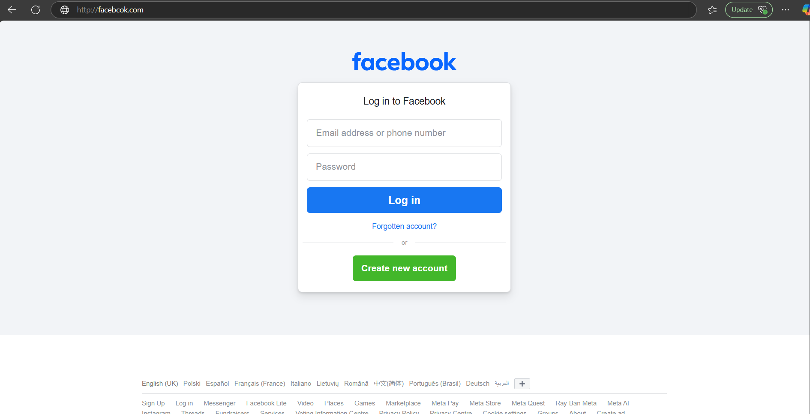
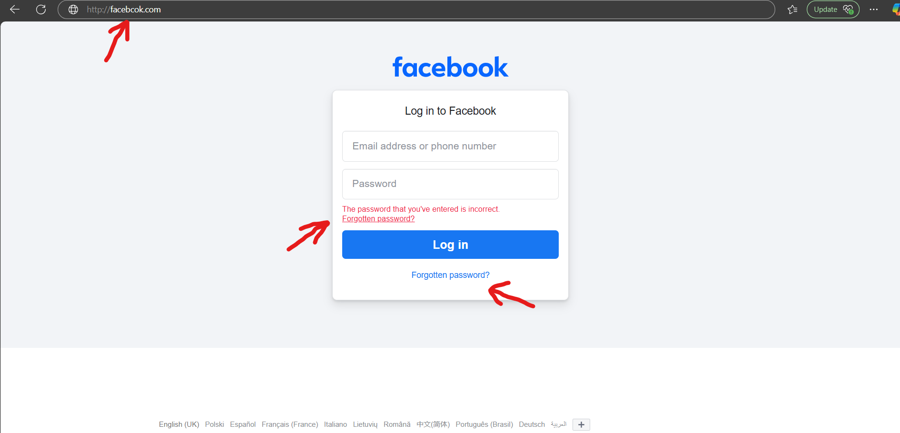
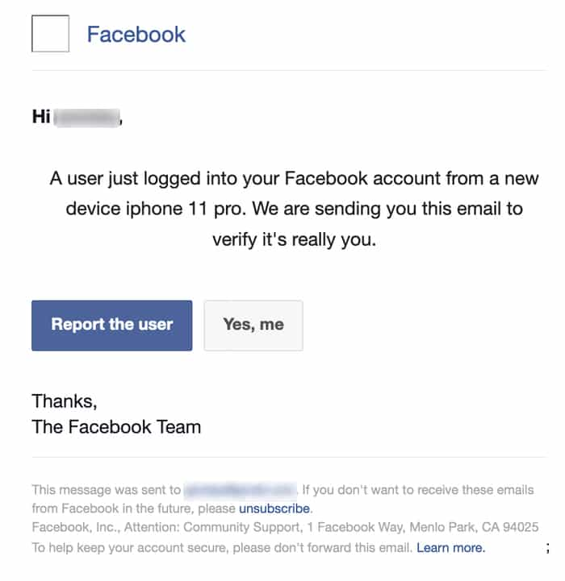
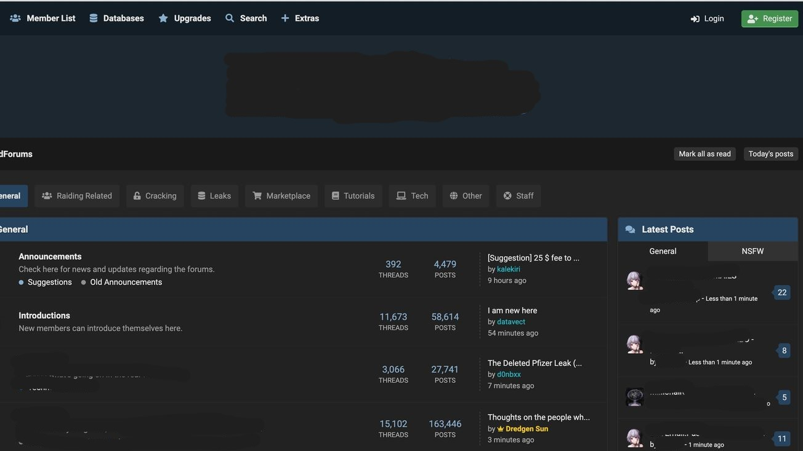

The term "Phishing" is a playful misspelling of the word fishing. It's named that way for very good reason! To understand Phishing it's useful to understand the analogy behind it.
Just as a fisherman uses bait to catch fish. Criminals will use bait to catch you.
The bait can come in many forms - all of which designed to pull you in and potentially divulge credentials, click malicious links or engage you in a social engineering scam
We'll start by inspecting a Malicious phishing website, then we'll take a look at some more advanced methods like how these attackers deliver malicious payloads e.g. Malware (malicious software), to your machine
You'll see below a very familiar website
Looks like the real deal!
This is a classic example of a Phishing site that I've pulled together.
The danger here? the site is not legitimate. The input fields don't serve any purpose other than to store your data locally on the server that the site is hosted on (in this example).
Commonly, these sites will ask for an input -so you input your legitimate credentials- then you will be prompted that your password is wrong. This causes most people to input the password again, either the same as before or with a variation - completely consolidating the integrity of the stolen data for the attacker.
I've Highlighted some important things to look for:
Firstly, you'll notice the URL (The website's address) says "http://facebcok.com". This is what we would call obfuscation.
The attacker will hide this in plain site, however if you're not looking for it - it could easily be missed!
Malicious actors pay alot of money for domains like this - sometimes referred to as "Typo Squatting".
Be especially careful if the site is associated with a login that may have access to sensitive data.
Next you'll notice the "Incorrect Password" prompt that I mentioned earlier. By entering your password twice - this shows the attacker that the password you've entered is definitely correct. It becomes even more damaging if you proceed to enter a DIFFERENT common password that you'd normally use - now the attacker has your email and two of your passwords.
Finally, it's very common for pages like this to be ripped straight from the raw source code of the original site (Copied), so you may find that links on the page may not work at all! This is because it creates extra work for the attacker to properly manage the backend, or they may not be technically literate. In some cases however, malicious actors will spend the time to flesh the site out - making it feel more legitimate.
If you do find yourself falling victim to this technique, you'd most likely find yourself being redirected to the real website that the phishing site is impersonating. Unfortunately, this can be extremely effective as this may eradicate any existsing suspicions you may have
Now... getting you to this site is where the real "Bait" part of phishing is put to action.
You'll see below an example of a Phishing attempt that may bring you to this site:
The "bait" here, is the social engineering, causing the target to feel anxious which may affect the decisions they make. Upon reading this, you may click almost instantly. That's the point. That's the bait.
There can be variations on this.
Make sure you always scrutinise the sender's email address. Check for typos or things like cyrillic characters (characters that look like the characters on your keyboard right now, however may look slightly different)
Running Phishing sites is becoming one of the largest growing economies in Cybercrime. The real danger is not - someone hacking into your facebook and posting cat pictures, but the value in auctioning off credentials en mass to the highest bidder.
Below is a screenshot of one of these places where this kind of data is sold. I've had to censor a significant amount as dark web sites like these aren't the friendliest of places.
If you're someone that uses the same password across many sites, this would be a very big problem for you - not to mention giving access to personal details such as: chat logs, private photographs, addresses, linked accounts, payment information.
Cybercrime and Fraud ruins lives.
On a lighter note, let's look at some phishing site statistics!
A "Drive by download" refers to a malicious download that doesn't require you to do anything other than visit a particular URL
Take a look at the following URL:
https://dodgydomain/download?Dodgydownload="a7bce3f6d"
A brief explanation. This URL triggers an http "GET" request, the link queries the server's database for the malware to download
You'll see the "https://Dodgydomain" structure that you may be familiar with - the "/download" portion refers to a path on the website (A particular page hosted on the address you're searching for).
The "?Dodgydownload="a7bce3f6d"" section is the part that asks the server "Hey, could you find this particular file and download it for me? (when a server is set up to do this)
It's not a very sophisticated technique for this, however it is very common. If you wanted to, you can capture these requests and analyse them before they're sent in Security tools like "BurpSuite".
Typically, the more advanced kind of this would be to use tailored java script or methods for detecting the browser you're using and exploiting known vulnerabilities for it vesrion
There is plenty of security features in place to protect against this on the browser level.
This is a phishing technique that is growing in popularity exponentially.
BEC comes in two forms
The second method is easier to mitigate. Email spoofing is very hard with modern security features, and spotting a typo in an address is certainly possible if you take the time to check them.
The First however - is a little more tricky to spot. Consider the following email:
Jimmy_CEO: "Hi jane, could you do me a favour? I need you to give me your password for the
company finances sharepoint ASAP, I can't log in and I need those figures for this meeting in 5 minutes. Really sorry, thanks."
Simply reading this here, you may think - "I'd never fall for that!".
But really think about it... You receive an email. From your boss. On your boss' email. With absolute urgency. What are the consequences if you don't?
It's a very serious issue with ever growing prominence. However here are some basic points to think about:
When it comes to true BEC, you have to trust your gut - and wherever possible, if sensitive information is being exchanged, verify the request in person.
In essence, it all boils down to how YOU manage YOUR cybersecurity practises.
Sure, you may have an IT team to secure the devices and networks, you may have windows defender, you may be sitting safely behind a firewall - but the rest is up to you.
Thousands of people are victims of Cyber Crime everyday. Hundreds of thousands of people a year. That's hundreds of thousands of people that think "It'll never happen to me".
Here at CyberFlame, we'll keep you right. Stay tuned!